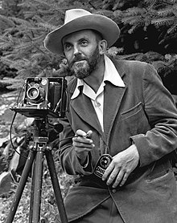

Ansel Adams was one of the best photographers ever!
Ansel Easton Adams (February 20, 1902 – April 22, 1984) was an American landscape photographer and environmentalist known for his black-and-white images of the American West. Adams helped found Group f/64, an association of photographers advocating "pure" photography that favored sharp focus and the use of the full tonal range of a photograph. With Fred Archer, he developed an exacting system of image-making called the Zone System, which described a method of achieving a desired final print through a deeply technical understanding of how tonal range is recorded and developed in exposure, negative development, and printing. The resulting clarity and depth of such images characterized his photography. Adams was a life-long advocate for environmental conservation, and his photographic practice was deeply entwined with this advocacy. At age 12, he was given his first camera during his first visit to Yosemite National Park. He developed his early photographic work as a member of the Sierra Club. He was later contracted with the U.S. Department of the Interior to make photographs of U.S. National Parks. For his work and his persistent advocacy, which helped expand the National Park system, he was awarded the Presidential Medal of Freedom in 1980.With trustee David H. McAlpin and curator Beaumont Newhall, Adams was a key advisor in establishing the photography department at the Museum of Modern Art in New York, an important landmark in securing photography's institutional legitimacy. He helped to stage that department's first photography exhibition, helped found the photography magazine Aperture, and co-founded the Center for Creative Photography at the University of Arizona.